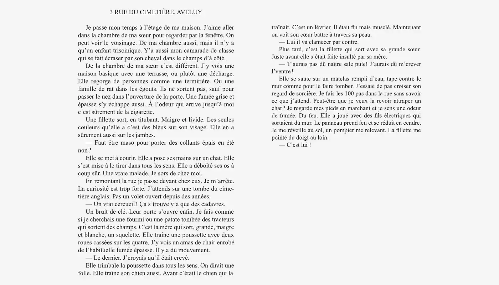
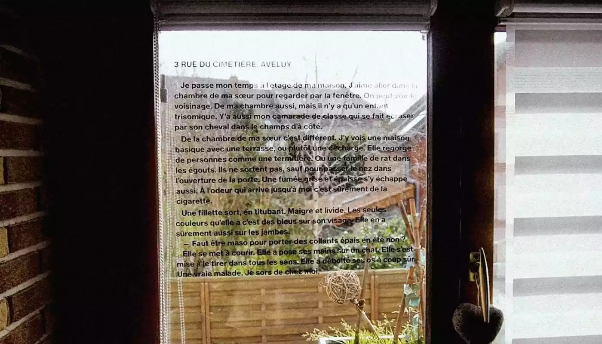
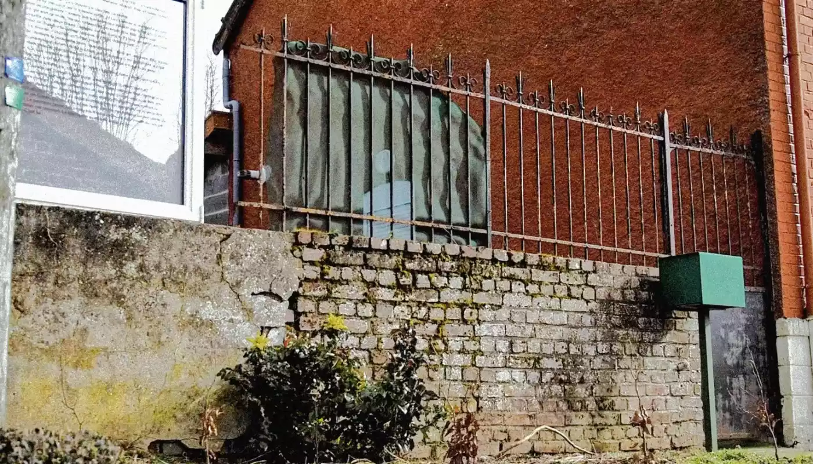
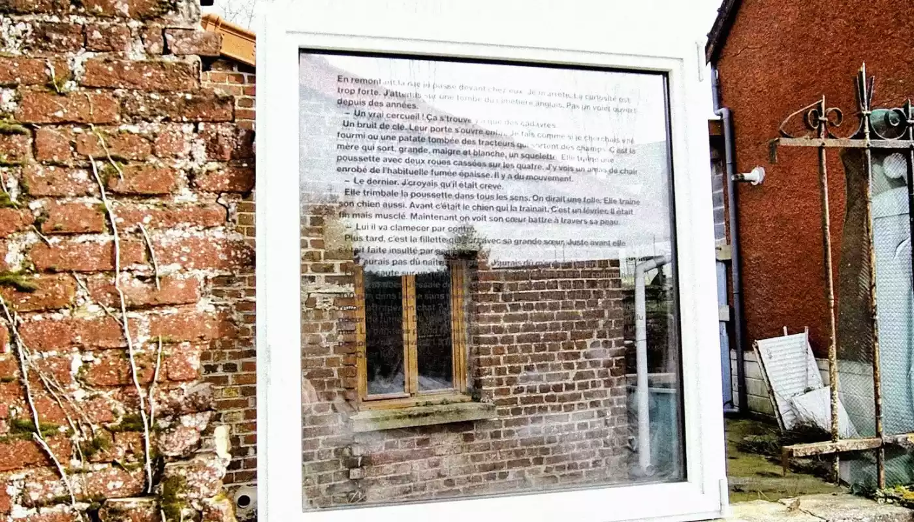
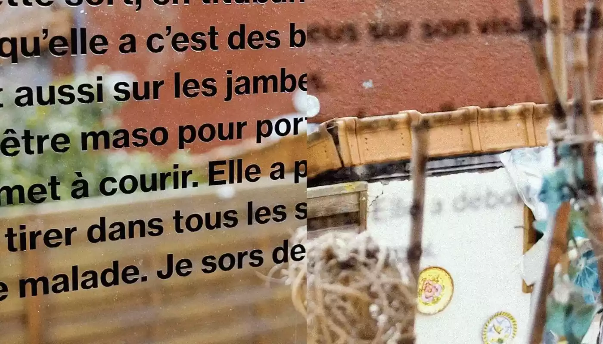
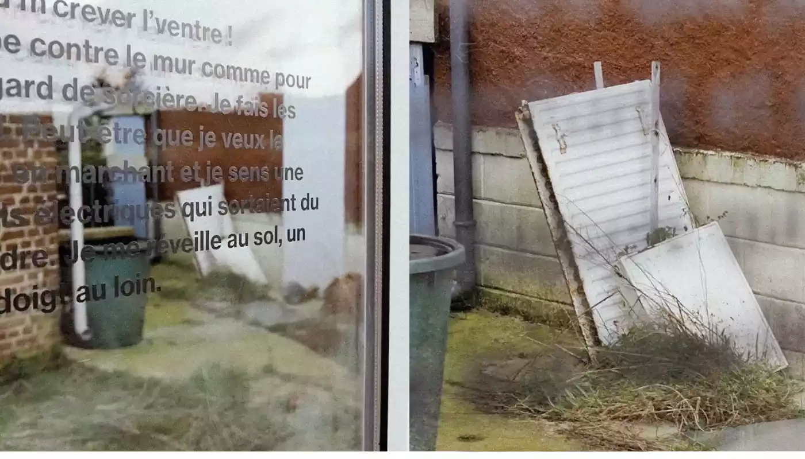
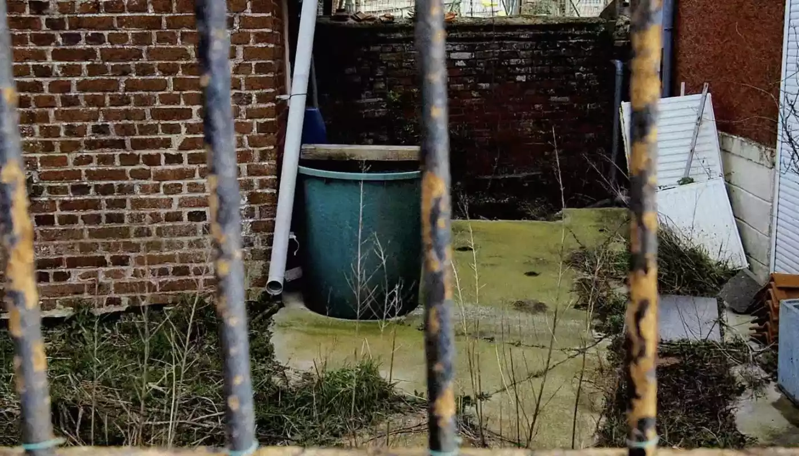

3 RUE DU CIMETIÈRE, AVELUY
Vidéo / Narration
Vidéo performance suite à l’écriture d’une nouvelle à la façon de Régis Jauffret, pour illustrer et mettre en avant l’histoire racontée.
La nouvelle raconte l’histoire d’une famille, d’après le regard d’un enfant à travers sa fenêtre. J’ai eu envie de me servir de la fenêtre comme dispositif qui supporte l’histoire. Elle permet la lecture de cette dernière mais aussi de voir les images relatives à cette histoire en regardant à travers elle.
Les fenêtres ne véhiculent pas la réalité. Elles ne sont qu'un reflet. La situation surréaliste de la 2e fenêtre accentue ce manque de véracité dans l’image produite.






